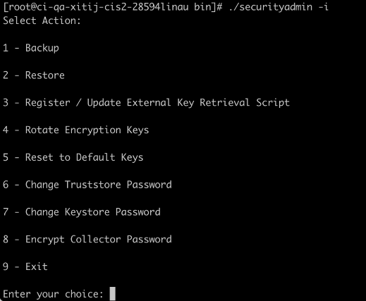
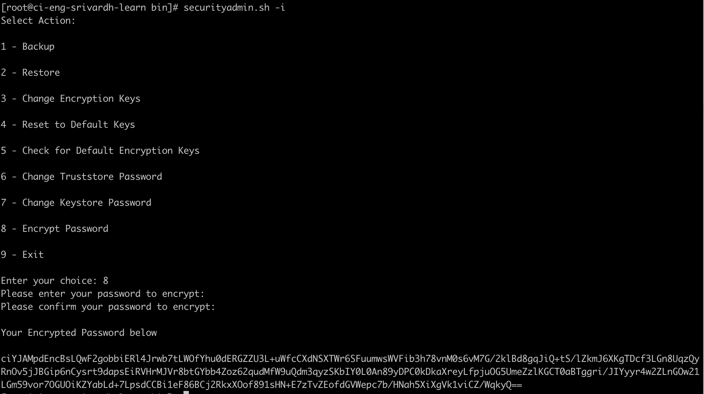
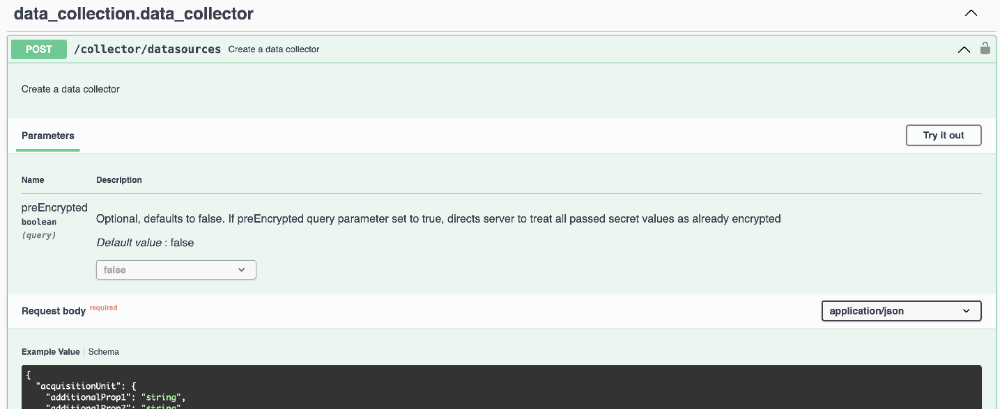

Seguridad
Seguridad
Herramienta securityadmin
 Sugerir cambios
Sugerir cambios
- Consideraciones sobre la actualización y la instalación
- Gestión de la seguridad en la unidad de adquisición
- Antes de empezar
- Con la herramienta SecurityAdmin
- Especificación de un usuario para ejecutar la herramienta
- Actualizando o eliminando proxy
- Recuperación de clave externa
- Cifrado de una contraseña para su uso en la API
Cloud Insights incluye funciones de seguridad que permiten que su entorno funcione con una seguridad mejorada. Las características incluyen mejoras en el cifrado, hash de contraseñas y la capacidad de cambiar contraseñas de usuario internas, así como pares de claves que cifran y descifran contraseñas.
Para proteger los datos confidenciales, NetApp recomienda cambiar las claves predeterminadas y la contraseña de usuario Acquisition después de realizar una instalación o actualización.
Las contraseñas cifradas del origen de datos se almacenan en Cloud Insights, que utiliza una clave pública para cifrar contraseñas cuando un usuario las introduce en una página de configuración del recopilador de datos. Cloud Insights no tiene las claves privadas necesarias para descifrar las contraseñas del recopilador de datos; solo las Unidades de Adquisición (AUS) tienen la clave privada del recopilador de datos necesaria para descifrar las contraseñas del recopilador de datos.
Consideraciones sobre la actualización y la instalación
Cuando el sistema Insight contiene configuraciones de seguridad no predeterminadas (es decir, contraseñas recodificadas), debe realizar una copia de seguridad de sus configuraciones de seguridad. La instalación de software nuevo o, en algunos casos, la actualización de software, revierte el sistema a una configuración de seguridad predeterminada. Cuando el sistema vuelve a la configuración predeterminada, debe restaurar la configuración no predeterminada para que el sistema funcione correctamente.
Gestión de la seguridad en la unidad de adquisición
La herramienta SecurityAdmin le permite administrar opciones de seguridad para Cloud Insights y se ejecuta en el sistema de unidades de adquisición. La gestión de seguridad incluye la gestión de claves y contraseñas, el guardado y la restauración de configuraciones de seguridad que se crean o restauran con la configuración predeterminada.
Antes de empezar
-
Debe tener privilegios de administrador en el sistema AU para instalar el software de la unidad de adquisición (que incluye la herramienta SecurityAdmin).
-
Si tiene usuarios que no son administradores y que posteriormente necesitarán acceder a la herramienta SecurityAdmin, deben agregarse al grupo cisys. El grupo cisys se crea durante la instalación de AU.
Después de la instalación de AU, la herramienta SecurityAdmin se encuentra en el sistema de unidades de adquisición en cualquiera de estas ubicaciones:
Windows - C:\Program Files\SANscreen\securityadmin\bin\securityadmin.bat Linux - /bin/oci-securityadmin.sh
Con la herramienta SecurityAdmin
Inicie la herramienta SecurityAdmin en modo interactivo (-i).

|
Se recomienda utilizar la herramienta SecurityAdmin en modo interactivo, para evitar pasar secretos en la línea de comandos, que se pueden capturar en los registros. |
Se muestran las siguientes opciones:

-
Backup
Crea un archivo zip de copia de seguridad del almacén que contiene todas las contraseñas y claves y coloca el archivo en una ubicación especificada por el usuario o en las siguientes ubicaciones predeterminadas:
Windows - C:\Program Files\SANscreen\backup\vault Linux - /var/log/netapp/oci/backup/vault
Se recomienda que las copias de seguridad de vault se mantengan seguras, ya que incluyen información confidencial.
-
Restaurar
Restaura la copia de seguridad zip del almacén que se creó. Una vez restaurada, todas las contraseñas y claves se revierten a valores existentes en el momento de la creación del backup.
La restauración se puede utilizar para sincronizar contraseñas y claves en varios servidores, por ejemplo, siguiendo estos pasos: 1) Cambiar las claves de cifrado en la AU. 2) Crear una copia de seguridad del almacén. 3) Restaurar la copia de seguridad del almacén en cada uno de los AUS.
-
Registrar / Actualizar Script de Recuperación de Clave Externa
Utilice un script externo para registrar o cambiar las claves de cifrado AU utilizadas para cifrar o descifrar las contraseñas del dispositivo.
Al cambiar las claves de cifrado, debe realizar un backup de la nueva configuración de seguridad para poder restaurarla después de una actualización o instalación.
Nota Esta opción solo está disponible en Linux.
Cuando utilice su propio script de recuperación de claves con la herramienta SecurityAdmin, tenga en cuenta lo siguiente:
-
El algoritmo soportado actual es RSA con un mínimo de 2048 bits.
-
El script debe devolver las claves privadas y públicas en texto sin formato. El script no debe devolver claves públicas y privadas cifradas.
-
El script debe devolver contenido sin procesar y codificado (solo en formato PEM).
-
El script externo debe tener permisos execute.
-
-
* Girar claves de cifrado*
Gire sus claves de cifrado (anula el registro de las claves actuales y registra las nuevas claves). Para usar una clave desde un sistema de gestión de claves externa, se deben especificar el identificador de clave pública y el identificador de clave privada.
-
Restablecer a las teclas predeterminadas
Restablece la contraseña de usuario de adquisición y las claves de cifrado de usuario de adquisición a los valores predeterminados, los valores predeterminados son los que se proporcionan durante la instalación.
-
Cambiar contraseña de Truststore
Cambie la contraseña del almacén de confianza.
-
Cambiar Contraseña de Almacén de Claves
Cambie la contraseña del almacén de claves.
-
* Cifrar contraseña de recopilador*
Cifrar contraseña del recopilador de datos.
-
Salida
Salga de la herramienta SecurityAdmin.
Elija la opción que desea configurar y siga las indicaciones.
Especificación de un usuario para ejecutar la herramienta
Si se encuentra en un entorno controlado y consciente de la seguridad, es posible que no tenga el grupo cisys, pero aún así desee que usuarios específicos ejecuten la herramienta SecurityAdmin.
Puede lograr esto instalando manualmente el software AU y especificando el usuario/grupo al que desea acceder.
-
Con la API, descargue el instalador de CI en el sistema AU y descomprima.
-
Necesitará un token de autorización única. Consulte la documentación de API Swagger (Admin > API Access y seleccione el enlace API Documentation) y busque la sección GET /au/oneTimeToken API.
-
Una vez que tenga el token, utilice la API GET /au/installers/{platform}/{version} para descargar el archivo del instalador. Deberá proporcionar la plataforma (Linux o Windows), así como la versión del instalador.
-
-
Copie el archivo de instalación descargado en el sistema AU y descomprima el archivo.
-
Navegue a la carpeta que contiene los archivos y ejecute el instalador como root, especificando el usuario y el grupo:
./cloudinsights-install.sh <User> <Group>
Si el usuario y/o grupo especificados no existen, se crearán. El usuario tendrá acceso a la herramienta SecurityAdmin.
Actualizando o eliminando proxy
La herramienta SecurityAdmin se puede utilizar para establecer o eliminar información de proxy para la unidad de adquisición ejecutando la herramienta con el parámetro -pr:
[root@ci-eng-linau bin]# ./securityadmin -pr
usage: securityadmin -pr -ap <arg> | -h | -rp | -upr <arg>
The purpose of this tool is to enable reconfiguration of security aspects
of the Acquisition Unit such as encryption keys, and proxy configuration,
etc. For more information about this tool, please check the Cloud Insights
Documentation.
-ap,--add-proxy <arg> add a proxy server. Arguments: ip=ip
port=port user=user password=password
domain=domain
(Note: Always use double quote(") or single
quote(') around user and password to escape
any special characters, e.g., <, >, ~, `, ^,
!
For example: user="test" password="t'!<@1"
Note: domain is required if the proxy auth
scheme is NTLM.)
-h,--help
-rp,--remove-proxy remove proxy server
-upr,--update-proxy <arg> update a proxy. Arguments: ip=ip port=port
user=user password=password domain=domain
(Note: Always use double quote(") or single
quote(') around user and password to escape
any special characters, e.g., <, >, ~, `, ^,
!
For example: user="test" password="t'!<@1"
Note: domain is required if the proxy auth
scheme is NTLM.)
Por ejemplo, para eliminar el proxy, ejecute este comando:
[root@ci-eng-linau bin]# ./securityadmin -pr -rp Debe reiniciar la unidad de adquisición después de ejecutar el comando.
Para actualizar un proxy, el comando es
./securityadmin -pr -upr <arg>
Recuperación de clave externa
Si proporciona un script de shell UNIX, puede ser ejecutado por la unidad de adquisición para recuperar la clave privada y la clave pública de su sistema de gestión de claves.
Para recuperar la clave, Cloud Insights ejecutará el script, pasando dos parámetros: Key id y key type. Key id se puede usar para identificar la clave en su sistema de gestión de claves. Key type es “public” o “private”. Cuando el tipo de clave es “public”, el script debe devolver la clave public. Cuando el tipo de clave es privado, se debe devolver la clave privada.
Para devolver la tecla a la unidad de adquisición, el script debe imprimir la tecla en la salida estándar. El script debe imprimir ONLY la clave para la salida estándar; no se debe imprimir ningún otro texto en la salida estándar. Una vez que la clave solicitada se imprime en la salida estándar, el script debe salir con un código de salida de 0; cualquier otro código de retorno se considera un error.
El script debe registrarse en la unidad de adquisición mediante la herramienta SecurityAdmin, que ejecutará el script junto con la unidad de adquisición. El script debe tener permisos READ y EXECUTE para el usuario root y cisys. Si el script de shell se modifica después de registrarse, el script de shell modificado debe volver a registrarse con la unidad de adquisición.
parámetro de entrada: id de clave |
Identificador de clave utilizado para identificar la clave en el sistema de gestión de claves de los clientes. |
parámetro de entrada: tipo de clave |
público o privado. |
salida |
La clave solicitada debe imprimirse en la salida estándar. Actualmente se admite la clave RSA de 2048 bits. Las llaves deben estar codificadas e impresas en el siguiente formato - |
código de salida |
Código de salida cero para éxito. Todos los demás valores de salida se consideran fallidos. |
permisos de script |
El script debe tener permisos de lectura y ejecución para el usuario root y cisys. |
registros |
Se registran las ejecuciones de script. Los registros se pueden encontrar en - |
Cifrado de una contraseña para su uso en la API
La opción 8 le permite cifrar una contraseña, que luego puede pasar a un recopilador de datos a través de API.
Inicie la herramienta SecurityAdmin en modo interactivo y seleccione la opción 8: Encrypt Password.
securityadmin.sh -i Se le pedirá que introduzca la contraseña que desea cifrar. Tenga en cuenta que los caracteres que escriba no se muestran en la pantalla. Vuelva a introducir la contraseña cuando se le solicite.
Alternativamente, si va a utilizar el comando en un script, en una línea de comandos utilice securityadmin.sh con el parámetro «-enc», pasando su contraseña no cifrada:
securityadmin -enc mypassword image:SecurityAdmin_Encrypt_Key_API_CLI_Example.png["Ejemplo de CLI"]
La contraseña cifrada se muestra en la pantalla. Copie toda la cadena, incluidos los símbolos iniciales o finales.

Para enviar la contraseña cifrada a un recopilador de datos, puede utilizar la API de recopilación de datos. El Swagger para esta API se puede encontrar en Admin > API Access y haga clic en el enlace «Documentación de API». Seleccione el tipo de API de recopilación de datos. En el encabezado data_collection.data_collector, seleccione la API /collector/datasources POST para este ejemplo.

Si establece la opción preEncrypted en True, cualquier contraseña que pase a través del comando API se tratará como ya cifrada; la API no volverá a cifrar la(s) contraseña(s). Al crear su API, simplemente pegue la contraseña cifrada previamente en la ubicación adecuada.